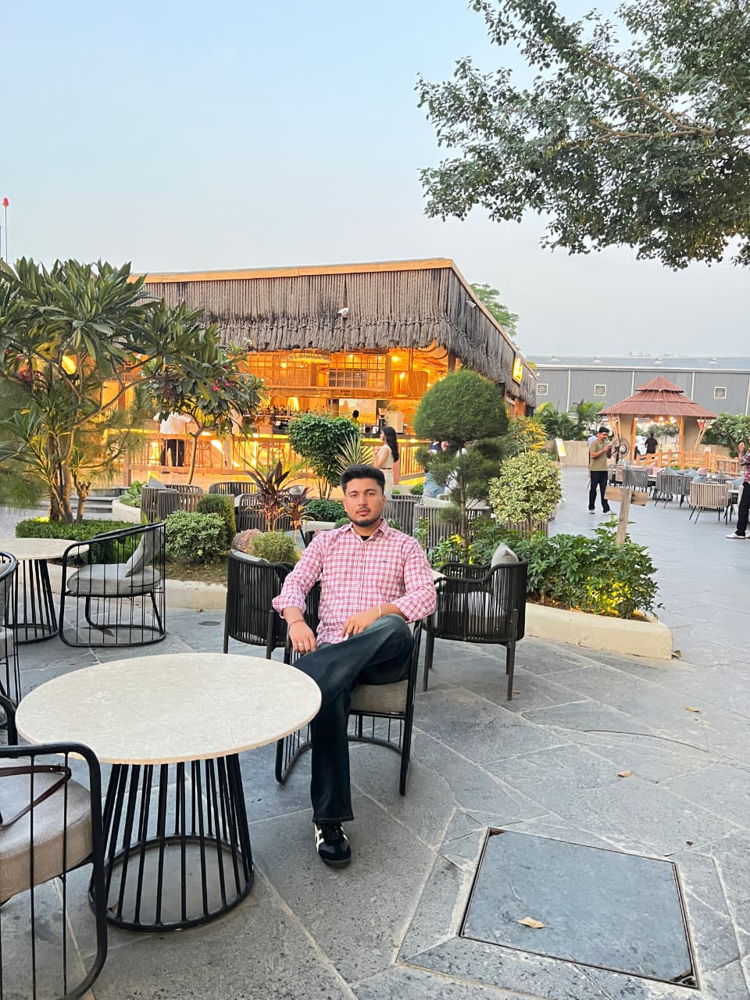

01
SEO Strategy
Keyword research, search intent mapping and an actionable roadmap to improve organic visibility.
- Keyword research
- Competitor analysis
- SEO planning
SEO & DIGITAL MARKETING SPECIALIST
I’m Sahil Singh, an SEO & Digital Marketing Specialist with 4+ years of experience helping businesses improve online visibility, attract the right audience and generate consistent leads.

01 / ABOUT ME
Hi, I’m Sahil, a Digital Marketing and SEO Specialist focused on building practical, result-driven strategies. I work with businesses to improve search rankings, strengthen their online presence, and turn traffic into real conversions.
I specialize in SEO (On-Page, Off-Page & Technical), AI Search Optimization, Social Media Marketing, Online Reputation Management, and content strategies — delivering data-driven solutions that turn traffic into quality leads and conversions.
WordPress | Shopify | Webflow | Wix | Squarespace
Ahrefs | SEMrush | Screaming Frog | Google Search Console | Google Analytics | Google Tag Manager | Meta Business Suite | Keyword Planner | Rank Math | Yoast | Canva | Figma
02 / WHAT I DO
A practical mix of strategy and execution to strengthen your digital presence.
01
Keyword research, search intent mapping and an actionable roadmap to improve organic visibility.
02
Optimising website structure and content so search engines and people can understand it.
03
Building topical relevance and authority with helpful content and thoughtful outreach.
04
Supporting campaigns across social media, email and paid channels with clear goals.
03 / TOOLKIT
04 / EXPERIENCE & APPROACH
DISCOVER
Clarify goals, audience, competitors and the current website or campaign position.
PLAN
Turn research into a focused plan with clear tasks, realistic priorities and success measures.
EXECUTE
Implement SEO and marketing improvements, then refine based on performance and learning.
MEASURE
Track meaningful metrics, communicate progress and identify the next best action.
Add your verified company names, job titles, dates and real project case studies here before publishing. Avoid adding results or metrics unless you can substantiate them.
05 / GET IN TOUCH
Have a website, SEO or digital marketing project? Tell me what you’re working on.
href="https://mail.google.com/mail/?view=cm&fs=1&to=ssingh58277@gmail.com" target="_blank" rel="noopener noreferrer"Email: ssingh58277@gmail.com · Phone / WhatsApp: +91 6283164337
Email: ssingh58277@gmail.com · Phone / WhatsApp: +91 6283164337